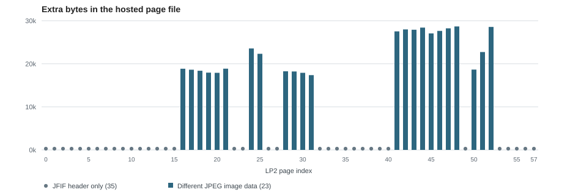

2014 seventh onion: the LP2 page files
Preserve the 58 JPEGs named by the saved page, compare every one with the wiki reader version, and identify header-only and image-data differences.
On this page
The signed follow-up names ky2khlqdf7qdznac.onion. A saved HTML page from that address lists 0.jpg through 57.jpg in order. Those 58 files correspond to LP2-00 through LP2-57. The address is a historical source pointer; the saved response, not a live onion service, is the evidence used here.
There are two hosted JPEG versions to distinguish. Liberpedia's reader uses the 2400 × 3600 page files preserved byte-for-byte by its three pinned image mirrors. The separate seventh-onion source set preserves the JPEGs under the names in the saved HTML. None of the 58 pairs is byte-identical. A checksum from one version must not be used to certify the other.
What actually differs?

| Relationship | Pages | What the check establishes |
|---|---|---|
| JFIF header only | 35 | The wiki file adds an 18-byte JFIF header after the JPEG start marker. Remove those exact bytes and the archived file matches; decoded pixels are identical. |
| Different JPEG image data | 23 | The two files have different encoded image data and small differences in decoded pixels. The wiki file is about 17–29 KB larger. |
The second group is LP2-16–21, 24–25, 28–31, 41–48 and 50–52. On those sheets, average absolute RGB differences are about 0.12–0.20 on a 0–255 scale. That is a whole-image average; a local detail may differ more. We have not established which encoding came first or why it changed. A visual reading can use either copy after comparison, but steganography, file-size, metadata and bit-level tests must declare the exact file and hash.
Get the correct copy
Every archived filename is hosted at exports/sources/cicada-2014-seventh-onion/{number}.jpg; each reader page also links its matching archive copy. For example, compare archived 0.jpg with the wiki LP2-00 JPEG, or archived 41.jpg with the wiki LP2-41 JPEG. The first pair differs only by a header; the second has different image data. Open the LP2 reader for the page images and text side by side.


The 58-row CSV gives both sizes, SHA-256 hashes, relationship class and pixel-comparison result for each page. The JSON report adds the audit limits. The site's download catalog lets you verify either version by checksum. The archived commentary is preserved separately from the captured HTML and JPEGs; its claims about decoding and extracted files are not established by this image audit.
Reproduce the comparison
Download reference-data.zip and original-images.zip and extract both into the same folder. With Python and Pillow installed, run python scripts/audit_2014_seventh_onion.py --check. The script verifies every archived file against the pinned manifest, checks that the saved HTML lists 58 pages in order, checks each wiki page hash against its structured record, and recomputes the comparison table. The chart script redraws the figure from the report. The source repository revision is linked for provenance; the working copies are hosted here.
Manuscript pages discussed
LP2-00 · LP2-01 · LP2-02 · LP2-03 · LP2-04 · LP2-05 · LP2-06 · LP2-07 · LP2-08 · LP2-09 · LP2-10 · LP2-11 · LP2-12 · LP2-13 · LP2-14 · LP2-15 · LP2-16 · LP2-17 · LP2-18 · LP2-19 · LP2-20 · LP2-21 · LP2-22 · LP2-23 · LP2-24 · LP2-25 · LP2-26 · LP2-27 · LP2-28 · LP2-29 · LP2-30 · LP2-31 · LP2-32 · LP2-33 · LP2-34 · LP2-35 · LP2-36 · LP2-37 · LP2-38 · LP2-39 · LP2-40 · LP2-41 · LP2-42 · LP2-43 · LP2-44 · LP2-45 · LP2-46 · LP2-47 · LP2-48 · LP2-49 · LP2-50 · LP2-51 · LP2-52 · LP2-53 · LP2-54 · LP2-55 · LP2-56 · LP2-57